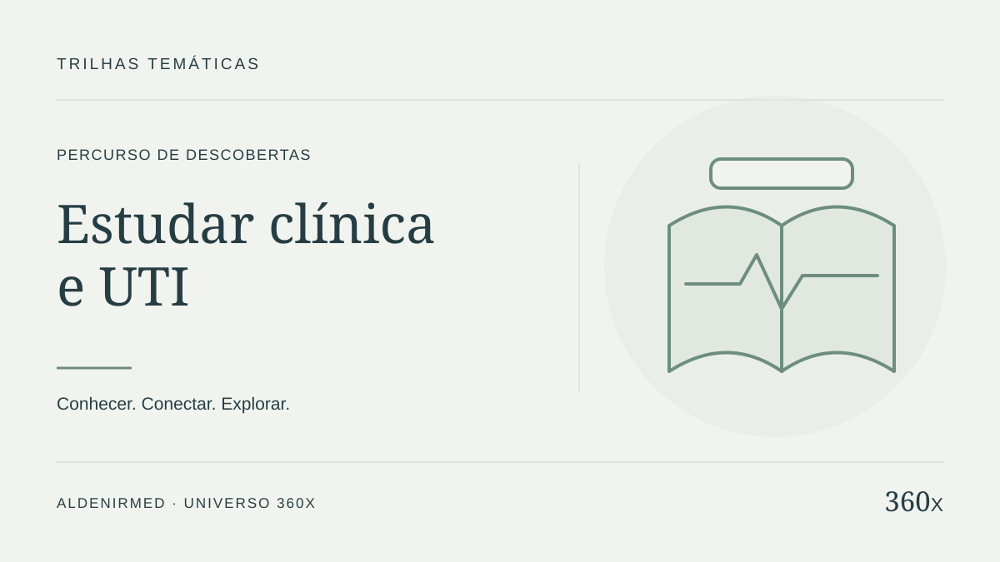
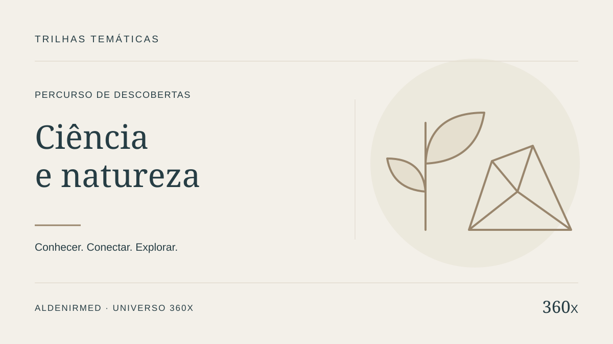
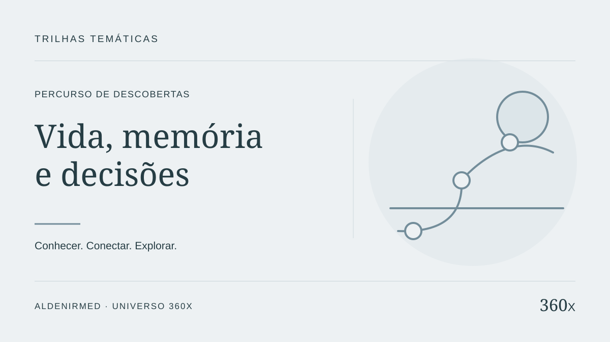
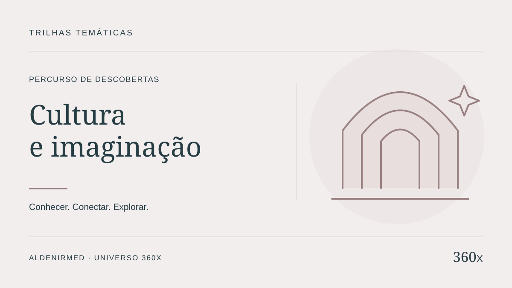
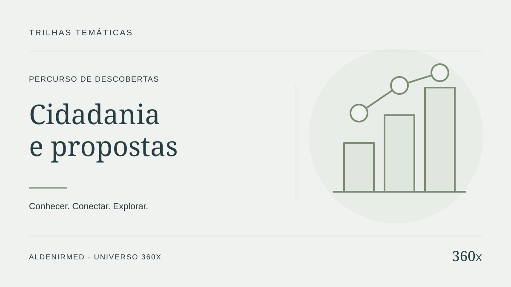
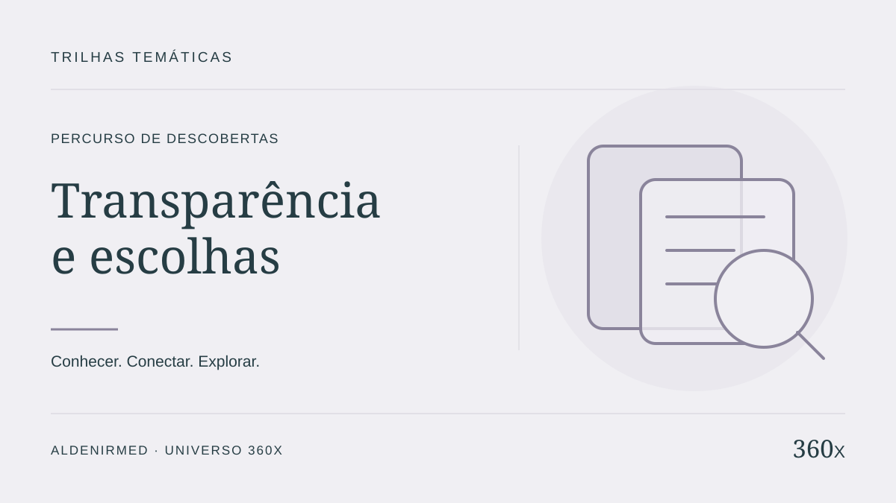

Estudar clínica e UTI
Do acervo de estudo aos protótipos respiratórios, à passagem de plantão e à leitura de custos da UTI.
PROJETO 360X · MAPA VIVO
Um olhar sobre o conjunto.
Um caminho para cada curiosidade.
Explore as áreas, escolha um projeto e siga direto para o seu site.
Ver catálogo de iniciativas
Do acervo de estudo aos protótipos respiratórios, à passagem de plantão e à leitura de custos da UTI.

Observe a vida e a geodiversidade; depois, amplie a curiosidade para memória, tecnologia e ferramentas de pesquisa.

Tempo, experiências, organização do conhecimento e escolhas cotidianas em um percurso aberto à reflexão.

Histórias, fé, ética e universos de ficção como caminhos de leitura, reflexão e aprendizagem ativa.

Da comunidade às propostas de sociedade: conheça ideias, premissas, evidências e perguntas ainda em aberto.

Produtos, instituições e recursos vistos por fontes, datas, critérios de comparação e limites da evidência.
Preparando as conexões… Os links diretos também estão disponíveis abaixo.
Tab percorre os pontos; setas mudam de ponto; Enter ou Espaço seleciona. +/− amplia; 0 enquadra. A lista oferece os mesmos destinos.
Nenhum projeto encontrado. Tente outro termo ou volte à visão geral.
As conexões representam áreas e afinidades de conteúdo. Não indicam integração técnica, compartilhamento de dados, parceria ou validação clínica. Escolha um projeto para conhecer cada relação.
Acesso direto, inclusive quando o mapa não estiver disponível. Os destinos abrem em uma nova aba.